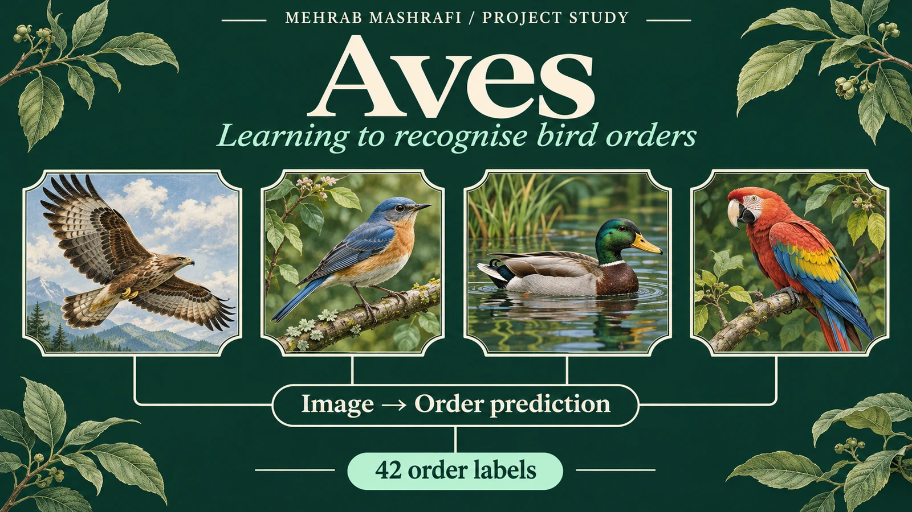

Aves order classifier · Computer vision
Aves: learning to recognise bird orders
I collected and cleaned bird imagery, compared image classification models and built a demonstration that predicts a bird’s taxonomic order. The project uses 42 order labels, rather than attempting to name every species.

- My role
- My contribution: image collection, data cleaning, model comparison and inference
- Tools and scope
- 42 order labels · Transfer learning · ResNet · Fastai
- Context
- Personal research and portfolio project
01 / The situation
Choose what the model should recognise
Bird identification can mean several different things. I chose order classification: grouping an image into one of the order labels in the project dataset. That gave the experiment a defined prediction target rather than a claim to recognise every bird species.
The collection needed variation in pose and setting. Images returned for a broad search can also be misplaced or unsuitable, so collection and label review were central parts of the work.
02 / My role
Build and refine the image collection
I collected web images for 42 order labels using Fastai image search tools. I varied the search terms to include birds flying and in other poses, rather than relying on a collection dominated by birds sitting on branches.
After initial training, I inspected images associated with high loss. I corrected misplaced examples and removed unsuitable images, then used the refined collection for the classification experiments. This made error inspection part of the training workflow.
Review the image collection before refining the classifier
- 01
Order labels
- 02
Image collection
- 03
Initial training
- 04
High loss image review
- 05
Refined order classifier
The review step feeds back into the dataset before later training and inference.
03 / The modelling decision
Compare architectures, then inspect the errors
I compared ResNet101, ResNet152, DenseNet201 and VGG16 runs, reviewing validation loss and classification errors. The final project demonstration used a fine tuned ResNet101 model.
The benchmark and later model run are separate experiments. Their results belong to their own training conditions and dataset splits, so I do not combine them into a single accuracy claim.
04 / The outcome
A bird order prediction workflow
The result is a documented workflow for collecting labelled imagery, reviewing errors, comparing models and running order predictions. The source and demonstration make the classification task tangible instead of leaving it as a training exercise.
Web imagery and label quality shape what the model learns. This experiment does not establish identification accuracy on independent field images, and an order prediction should not be mistaken for a species identification.
Watch the project
Watch the Aves classifier walkthrough
I explain the image collection, model comparisons and bird order prediction task. Watch on YouTube ↗
05 / Explore the work
Inspect the classifier
Have a dataset that needs a clearer path to use?
Tell me what you want to compare or predict, where the records come from and who will use the result.
Discuss your project Email meProject by Mehrab Mashrafi. Updated .